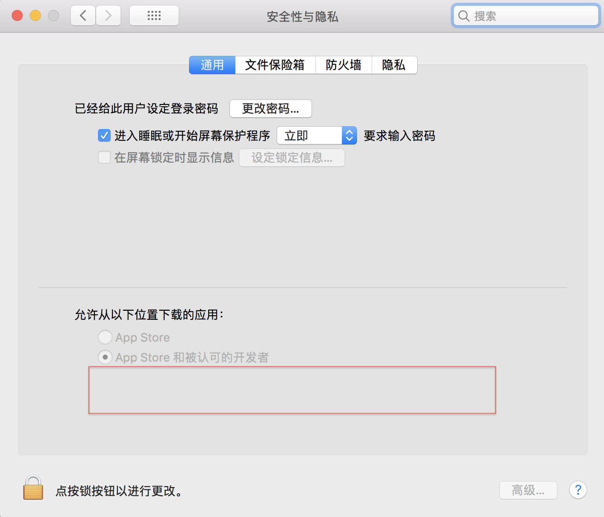

MacOS VirtualBox 配置Ubuntu基本环境
部分使用Mac的同学的VirtualBox安装有问题，这主要可能是MacOS阻止了安装程序的安装，在安全性与隐私下面这个框里同意就可以了(我是这么解决的，不知道对同学们有没帮助) 
经过思考，个人对于Ubuntu的使用以及各方面的配置比较熟悉，所以在CentOS以及Ubuntu之间，我选择了Ubuntu作为这次服务计算的学习环境，因为我的电脑之前删掉了之前Vmware Fusion安装过的Ubuntu，所以我直接用我的笔记本作为示范
成功安装了VirtualBox后，其实流程挺简单的，就是安装提示创建新的虚拟机
 选择下载好的镜像
选择下载好的镜像
 开启虚拟机，安装提示安装好就可以了
开启虚拟机，安装提示安装好就可以了
下面说说一些增强体验的东西
Ubuntu安装输入法
输入法的话我选择的是sogou拼音 这里有相关的教程 Ubuntu16.04 搜狗拼音安装
双向粘贴、文件拖拽(外到内)
首先在设备设置>常规>高级钟设置共享粘贴板、拖放为双向
 打开虚拟机，点击上面 Device > Install Guest Additions CD images就可以安装VirtualBox的增强功能,安装完成，重启后，也就能够使我们的系统能够正确使用上面我们选择的功能了
打开虚拟机，点击上面 Device > Install Guest Additions CD images就可以安装VirtualBox的增强功能,安装完成，重启后，也就能够使我们的系统能够正确使用上面我们选择的功能了

提供远程网络访问(maybe出租利器哈哈?)
这个之前其实我就正在我的电脑主机上用，提供一个在校内给本人作使用的一个虚拟环境。不过之前是使用的Vmware,现在在这里我们看看如何在VirtualBox中开启这个功能
在https://www.virtualbox.org/wiki/Downloads 中下载VirtualBox 5.2.18 Oracle VM VirtualBox Extension Pack
 在设置的拓展中选择其进行安装，完成后我们就能在虚拟机的设置的显示项目里进行设置
在设置的拓展中选择其进行安装，完成后我们就能在虚拟机的设置的显示项目里进行设置
 设置完成后，重启软件，我们就可以使用了
Windows自带的远程桌面连接就可以连上我们的虚拟机
设置完成后，重启软件，我们就可以使用了
Windows自带的远程桌面连接就可以连上我们的虚拟机